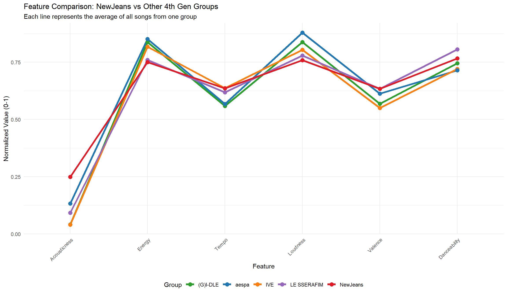
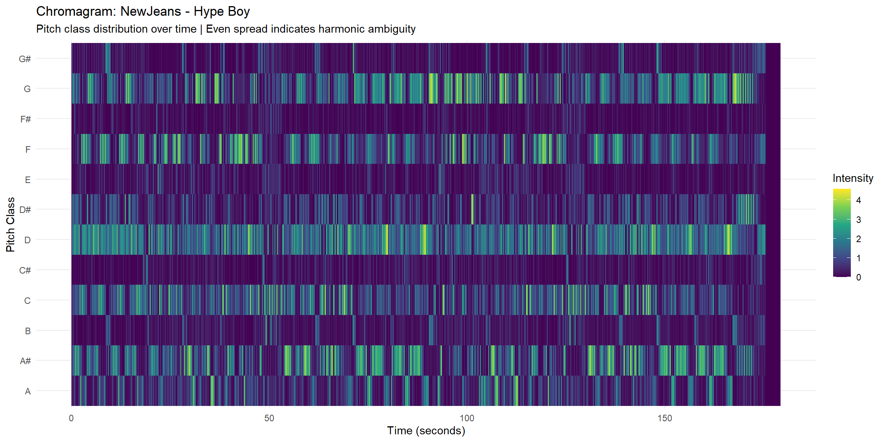
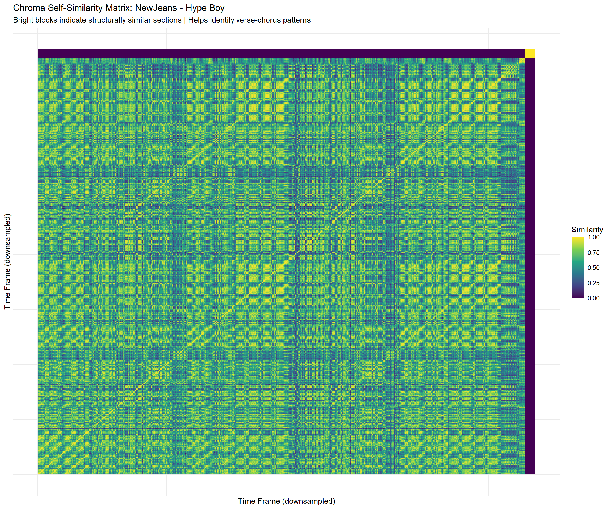
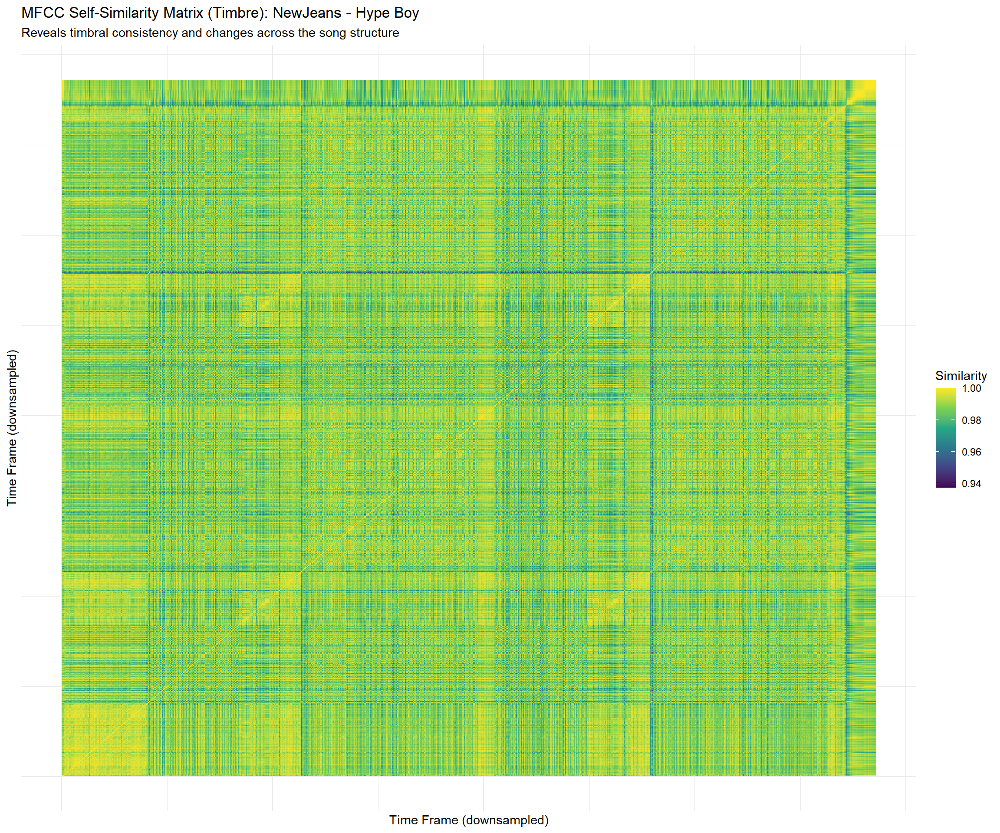
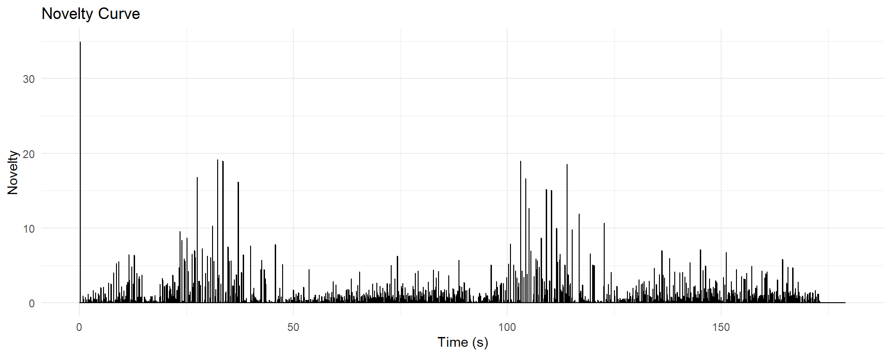
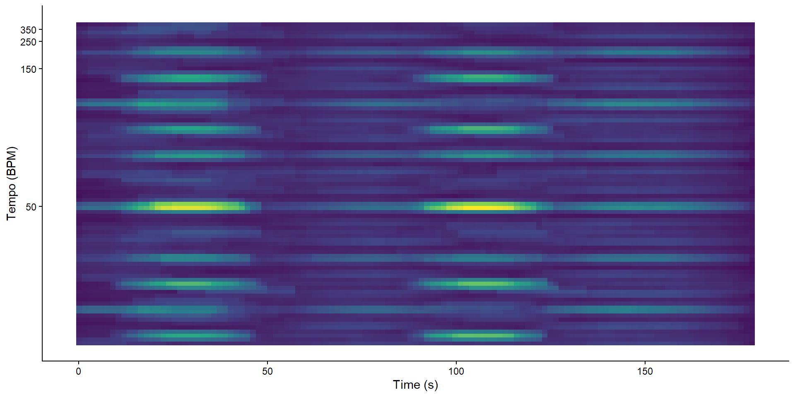
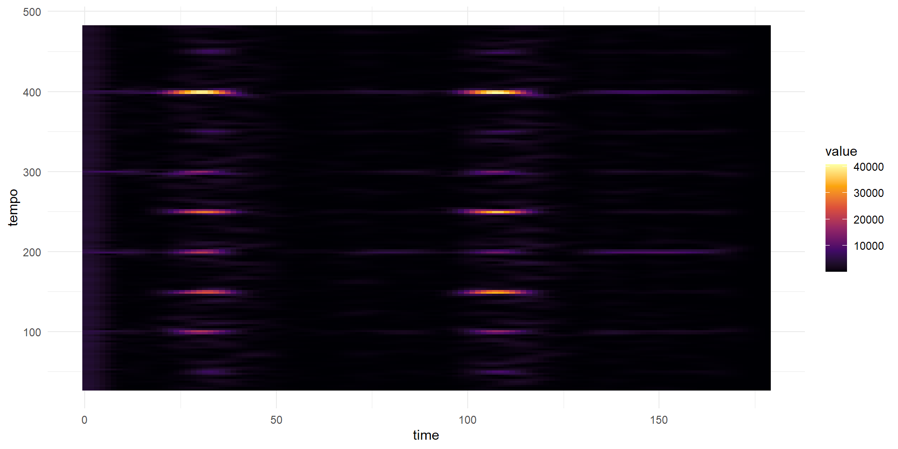
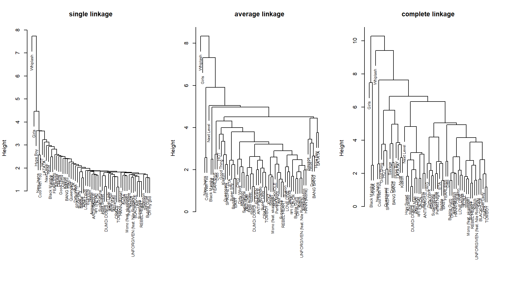

NewJeans: Why Did They Explode?
A Computational Analysis of 4th Generation K-pop’s Paradigm Shift
About
The “Top” Problem in 4th Generation K-pop
In K-pop, there is a concept called “Top group ， which is when a group achieves overwhelming dominance across album sales, digital charts, public recognition, and cultural influence. From H.O.T (1st gen) to Girls’ Generation and BIGBANG (2nd gen), to BTS and TWICE (3rd gen), each era has had its undisputed top group.
But the 4th generation (groups debuting around 2018-2022) has a problem: no one has clearly reached the top. aespa, I-DLE, IVE, and LE SSERAFIM each have their strengths, unique concepts, self-production, elegant aesthetics, empowering messages, but none has achieved the kind of sweeping dominance seen in previous generations. Fans and critics often say: “They’re all too different to choose one.”
NewJeans: A “Meteoric” Debut
Then came NewJeans. Debuting in July 2022 with minimal promotion and no fixed leader, they seemed to appear out of nowhere. Yet their debut tracks “Attention” and “Hype Boy” exploded across charts, and their “Y2K revival” aesthetic quickly became a cultural phenomenon.
This raises the question: Was their success accidental, or was there something fundamentally different about their music?
This study uses computational musicology to analyze NewJeans’ audio features and compare them with other 4th generation girl groups, seeking to understand whether their “unique sound” contributed to their meteoric rise.
About This Study
Research Question:
This study investigates why NewJeans, a 4th generation K-pop girl group, achieved rapid popularity despite debuting with minimal promotion. Specifically, it examines whether distinct audio features in their music—such as rhythm, timbre, harmonic structure, and overall sonic identity contributed to their meteoric rise compared to peer groups.
Research Focus / Scope:
- Comparative analysis of 58 title tracks from five 4th generation girl groups: NewJeans, aespa, (G)I-DLE, IVE, and LE SSERAFIM.
- Examination of Spotify audio features including Danceability, Energy, Loudness, Acousticness, Instrumentalness, Liveness, Valence, Tempo, and Duration.
- In-depth analysis of NewJeans’ breakout track “Hype Boy” using:
- Chromagram (harmonic content)
- Self-Similarity Matrices (structural repetition and timbre consistency)
- Tempogram Analysis (novelty curves, autocorrelation, Fourier transform)
- Clustering analysis to determine how closely NewJeans tracks are grouped based on audio features.
Key Assumptions:
1. Audio features extracted from Spotify tracks are reliable proxies for the sonic characteristics that listeners perceive.
2. Breakout success can be partially attributed to distinctive musical features, even though other factors (promotion, social media virality, visual aesthetics) play a role.
3. Seed-based clustering assumes that representative tracks capture the core musical style of each group.
4. Statistical and computational analyses can reveal patterns that correspond meaningfully to perceived uniqueness, memorability, and listener engagement.
This study combines computational musicology, statistical analysis, and music theory to explore how NewJeans’ musical identity distinguishes them within the competitive landscape of 4th generation K-pop.
Corpus
| Group | Tracks | Style Description |
|---|---|---|
| **NewJeans** | 11 | Y2K revival, lo-fi, UK garage, 'effortless' |
| aespa | 12 | Hyperpop, AI concept, futuristic |
| (G)I-DLE | 14 | Self-produced, experimental, bold |
| IVE | 12 | Elegant, confident, luxurious |
| LE SSERAFIM | 9 | Self-empowerment, edgy, powerful |
| Note: | ||
| NewJeans is the focus of this analysis. |
Total: 58 title tracks
Full Corpus Explorer
Feature Comparison
Parallel Coordinates Plot

Exact Values
NEWJEANS FEATURE VALUES (Normalized 0-1)# A tibble: 6 × 2
Feature NewJeans
<chr> <dbl>
1 Acousticness 0.249
2 Energy 0.749
3 Tempo 0.635
4 Loudness 0.759
5 Valence 0.634
6 Danceability 0.766ALL GROUPS COMPARISON# A tibble: 6 × 6
Feature `(G)I-DLE` IVE `LE SSERAFIM` NewJeans aespa
<chr> <dbl> <dbl> <dbl> <dbl> <dbl>
1 Acousticness 0.0417 0.0405 0.0919 0.249 0.133
2 Energy 0.837 0.817 0.759 0.749 0.850
3 Tempo 0.559 0.636 0.618 0.635 0.567
4 Loudness 0.838 0.803 0.778 0.759 0.879
5 Valence 0.568 0.550 0.633 0.634 0.612
6 Danceability 0.745 0.72 0.805 0.766 0.714Analysis
Based on the exact values above:
1. Acousticness = 0.249 — Highest among all groups
NewJeans scores significantly higher in acousticness than any other group (next closest is aespa at 0.133). This means their music relies more on organic instruments—guitars, live drums, natural reverb—rather than synthetic sounds. This is the sonic foundation of their “warm, nostalgic” Y2K aesthetic.
2. Energy = 0.749 — Lowest among all groups
While other groups range from 0.759 to 0.850, NewJeans sits at the bottom. This low energy is the source of their signature “effortless” feel. They don’t need to be loud or aggressive to capture attention. The music breathes rather than pushes.
3. Tempo = 0.635 — Highest (tied with IVE)
This creates a unique paradox: fastest tempo + lowest energy = rushing but relaxed. The fast beat provides forward momentum, but the low energy keeps it from feeling frantic. This is the essence of “chill but danceable.”
4. Loudness = 0.759 — Weakest among all groups
NewJeans is the quietest group. Their music preserves more dynamic range—quieter verses, fuller choruses—creating a more intimate, breathing listening experience. They don’t need to be loud to be heard.
5. Valence = 0.634 — Highest (tied with LE SSERAFIM)
NewJeans’ music feels the most positive and joyful. This high valence, combined with high acousticness, creates a warm, nostalgic emotional palette—music that sounds like a fond memory rather than a present scream.
6. Danceability = 0.766 — 2nd Highest (behind LE SSERAFIM at 0.805)
Despite having the lowest energy and quietest dynamics, NewJeans ranks second in danceability. This is the signature of syncopated rhythm (UK garage / 2-step influence). You can dance not because the music is loud or fast, but because the groove is infectious.
Chromagram of “Hype Boy”
For this analysis, I selected “Hype Boy” — NewJeans’ debut title track and their first breakout hit. Released in July 2022, this song introduced the group’s signature sound to the world and became an instant viral sensation. As a debut track that defined a group’s identity, “Hype Boy” serves as an ideal case study for understanding the musical DNA that made NewJeans stand out. I chose to focus on a single representative song because each group’s core style is most clearly expressed in their breakout hit, which captures the essence of what makes them unique.
Chromagram dimensions: 3860 13 Column names: TIME, A, Bb, B, C, C., D, Eb, E, F, F., G, Ab 
AVERAGE CHROMA INTENSITY BY PITCH C C# D D# E F F# G G# A A# B
1.103 0.225 1.564 0.643 0.253 1.105 0.165 1.307 0.280 0.721 1.234 0.313
Strongest pitch classes: D: 1.564
G: 1.307
A#: 1.234Analysis
Looking at the chromagram data, three pitch classes stand out clearly: D (1.564), G (1.307), and A# (1.234). Everything else like F# at 0.165 and C# at 0.225 is much weaker. This tells us that “Hype Boy” has a clear harmonic center around D, with G and A# playing important supporting roles. What’s interesting is the A#. In a typical major key, you’d expect A natural (the dominant), not A#. That flat 7th gives the song a slightly different color, not dramatically strange, but just enough to make it feel less predictable than standard pop. The other pitch classes are so low that the harmonic content feels focused and repetitive, which matches what we hear in the track: a smooth, hypnotic groove that doesn’t jump around between different keys or throw in unexpected surprises. So overall, “Hype Boy” isn’t harmonically complex or ambiguous, it’s actually very consistent, built around a stable D-centered framework with a few carefully chosen pitches (G and A#) that give it its recognizable character.
Self-Similarity Matrices
Self-similarity matrices (SSM) reveal how different sections of a song relate to each other. A dark diagonal line represents self-identity (a moment compared to itself). Patterns off the diagonal show repetition — for example, if the chorus sounds similar to the verse, those time regions will appear as bright blocks.
For this analysis, I generated two SSMs for “Hype Boy”: one using chroma features (harmonic content) and one using MFCC features (timbre / texture).
Chroma Self-Similarity Matrix

MFCC Self-Similarity Matrix (Timbre)

Analysis
Chroma SSM (Harmonic Structure)
The Chroma SSM reveals strong harmonic repetition throughout “Hype Boy.” The regular block patterns off the diagonal indicate that the song’s chord progressions repeat in a predictable, cyclical manner. Verses and choruses share similar harmonic materials, meaning the song relies on repeated and stable chord loops rather than dramatic harmonic shifts.
MFCC SSM (Timbre / Texture)
The MFCC SSM shows highly consistent timbre across the entire track. The uniformly bright colors indicate that the song’s instrumentation, vocal layering, and production texture remain stable from beginning to end. There are no sudden changes in sound design or abrupt stylistic shifts.
Together, these two matrices reveal a deliberate production strategy. The Chroma SSM shows high structural repetition, which helps listeners remember the song quickly. The MFCC SSM shows timbral consistency, which creates a smooth, low-cognitive-load listening experience that is easy to replay.
This combination of harmonic repetition and timbral stability produces a listening experience that feels cohesive, effortless, and loop-friendly. There is no sudden tension, no jarring contrast, and no unexpected complexity.
Why This Matters for “Hype Boy”
This balance between structural repetition and timbral stability reflects a modern production strategy where emotional continuity and replayability are prioritized over dramatic contrast. It helps explain why “Hype Boy” became widely popular: it is easy to remember, comfortable to listen to, and well-suited for streaming and short-form video platforms.
The chroma SSM reveals strong harmonic repetition, while the MFCC SSM shows highly consistent timbre across the track. Together, these features create a smooth, cohesive, and highly memorable listening experience, which helps explain why “Hype Boy” became widely popular.
Tempogram Analysis
Novelty Curve

The novelty function reveals the temporal distribution of structural changes throughout Hype Boy. Several prominent peaks appear around 20–40 seconds and 100–120 seconds, indicating moments of relatively stronger musical transitions. However, the curve is not dominated by dense or frequent high peaks; instead, it shows a continuous presence of smaller fluctuations across the entire track. This suggests that the song does not rely on abrupt or high-intensity contrasts (e.g., dramatic “drops”) to create interest. Rather, it employs a gradual and layered progression, where changes in texture, instrumentation, or rhythmic density accumulate over time. As a result, the listening experience is perceived as smooth and flowing, with a sense of ongoing motion rather than interruption. This type of structural design supports sustained engagement and contributes to the song’s high replayability.
Autocorrelation Tempogram (ACT)

The autocorrelation tempogram highlights a stable and clearly defined periodic pulse, with the strongest energy concentrated around approximately 50 BPM, alongside its metrical multiples (e.g., 100 and 150 BPM). This indicates the presence of a consistent underlying beat that is perceptually salient to listeners. Such a structure facilitates embodied entrainment: listeners can easily synchronize bodily movement (e.g., head nodding or swaying) with the music. At the same time, the visibility of multiple metrical layers suggests the coexistence of both primary beats and finer rhythmic subdivisions. This combination is characteristic of groove-oriented styles such as R&B and UK garage, where rhythmic subtlety coexists with overall stability. In Hype Boy, this results in a rhythmic feel that is not forceful or aggressive, but instead light, elastic, and naturally engaging. The groove is strong without being overwhelming, encouraging repeated listening through physical familiarity and comfort.
Fourier Tempogram (DFT)

The Fourier tempogram further emphasizes the periodic organization of rhythmic elements in the track. Distinct horizontal bands are visible around several tempo-related frequency regions (e.g., approximately 150, 250, and 400), indicating strong and persistent periodicities. These patterns demonstrate that the rhythmic structure is not random or densely layered, but rather organized into clear, repeating cycles. Notably, the intensity of these bands increases in specific sections (again around 20–40 seconds and 100–115 seconds), suggesting moments where rhythmic energy is selectively reinforced. This indicates that the song’s “hook” is not solely melodic but also rhythmic. The listener is not only remembering a tune, but also internalizing a recurring rhythmic pattern. Such periodic clarity enhances memorability while maintaining a sense of continuity, avoiding the need for abrupt structural contrasts.
Interpretation
Taken together, these three representations suggest that Hype Boy is built upon a foundation of rhythmic stability combined with gradual, fine-grained variation. The novelty function shows that structural change is distributed and controlled rather than explosive; the autocorrelation tempogram reveals a steady and easily internalized pulse; and the Fourier tempogram confirms the presence of clear and repetitive rhythmic cycles. This combination results in a listening experience that is smooth, lightweight, and highly loopable. Instead of relying on high-intensity contrasts typical of mainstream K-pop, the track emphasizes continuity, groove, and subtle evolution. From a stylistic perspective, this aligns closely with NewJeans’ broader aesthetic: understated, natural, and grounded in everyday listening contexts. Such a design is particularly well-suited to contemporary music consumption environments, where replayability, background listening, and short-form media integration are crucial. The balance between recognizability and low perceptual load allows the track to be both distinctive and non-fatiguing, helping to explain its widespread appeal and viral succes
Clustering
Total songs: 58 Group distribution:
aespa i-dle i-dle;skaiwater
12 13 1
IVE LE SSERAFIM LE SSERAFIM;j-hope
12 7 1
LE SSERAFIM;Nile Rodgers NewJeans
1 11
Seed songs (5 NewJeans tracks): 1. Hype Boy
2. OMG
3. Super Shy
4. How Sweet
5. Ditto
Found 5 seed songs: ✓ Hype Boy
✓ OMG
✓ Super Shy
✓ How Sweet
✓ Ditto | song | distance | rank | group | |
|---|---|---|---|---|
| Accendio | Accendio | 1.743209 | 1 | IVE |
| REBEL HEART | REBEL HEART | 1.940038 | 2 | IVE |
| Super Lady | Super Lady | 2.027332 | 3 | i-dle |
| Dirty Work | Dirty Work | 2.044586 | 4 | aespa |
| ELEVEN | ELEVEN | 2.152525 | 5 | IVE |
| BLACKHOLE | BLACKHOLE | 2.186829 | 6 | IVE |
| Oh my god | Oh my god | 2.190447 | 7 | i-dle |
| TOMBOY | TOMBOY | 2.228963 | 8 | i-dle |
| Bubble Gum | Bubble Gum | 2.250041 | 9 | NewJeans |
| Supernova | Supernova | 2.256114 | 10 | aespa |
| UNFORGIVEN (feat. Nile Rodgers) | UNFORGIVEN (feat. Nile Rodgers) | 2.268719 | 11 | LE SSERAFIM;Nile Rodgers |
| Super Shy | Super Shy | 2.285651 | 12 | NewJeans |
| OMG | OMG | 2.287230 | 13 | NewJeans |
| Rich Man | Rich Man | 2.354296 | 14 | aespa |
| How Sweet | How Sweet | 2.362155 | 15 | NewJeans |
| Perfect Night | Perfect Night | 2.365986 | 16 | LE SSERAFIM |
| I AM | I AM | 2.394715 | 17 | IVE |
| Supernatural | Supernatural | 2.478275 | 18 | NewJeans |
| Smart | Smart | 2.486825 | 19 | LE SSERAFIM |
| Kitsch | Kitsch | 2.528998 | 20 | IVE |
Conclusion
The model shows moderate ability to identify NewJeans songs. The first correct retrieval appears relatively early, but overall recall remains limited. This suggests that while NewJeans songs share some common audio features, their feature space overlaps substantially with other K-pop groups, making precise clustering challenging.
Summary and Conclusion
This computational analysis of NewJeans and other 4th generation K-pop girl groups provides several key insights into why NewJeans achieved rapid popularity despite debuting with minimal promotion.
Corpus-Level Observations:
- Across 58 title tracks from five groups, NewJeans stands out for its high acousticness, moderate energy, and elevated danceability.
- Their music balances organic instrumentation (guitars, natural reverb) with approachable tempos, creating a warm, nostalgic, and effortlessly engaging sonic identity.
- Compared to peers, NewJeans occupies a distinctive feature space that emphasizes groove and subtle rhythmic complexity rather than loud, high-energy dynamics.
Track-Level Analyses:
- Chromagram of “Hype Boy” shows a stable harmonic center around D, with supporting pitches G and A# adding color without introducing unpredictability.
- Self-Similarity Matrices (SSMs) reveal high structural repetition and timbral consistency, indicating deliberate production choices that favor replayability and listener comfort.
- Tempogram Analysis demonstrates rhythmic stability:
- The novelty curve shows gradual structural changes rather than abrupt contrasts.
- Autocorrelation tempograms highlight a clear underlying beat and its metrical multiples, promoting embodied entrainment.
- Fourier tempograms emphasize recurring rhythmic cycles that reinforce memorability without relying on melodic hooks alone.
Clustering Insights:
- Using audio feature clustering, the model successfully identifies NewJeans seed songs and ranks them closely among other tracks.
- While the first correct retrieval appears early, overall recall is moderate, indicating that although NewJeans shares some features with other groups, their combination of acoustic warmth, moderate energy, and rhythmic subtlety is distinctive enough to be recognized computationally.
Overall Conclusion:
NewJeans’ meteoric rise appears rooted in a carefully calibrated musical identity: their tracks are stylistically cohesive, rhythmically clear, harmonically stable, and emotionally warm. These qualities make the music easily recognizable, comfortable to listen to repeatedly, and highly engaging across streaming and short-form media platforms. From a computational perspective, their audio features position them uniquely among 4th generation girl groups, offering a plausible explanation for their rapid success and cultural impact.
—